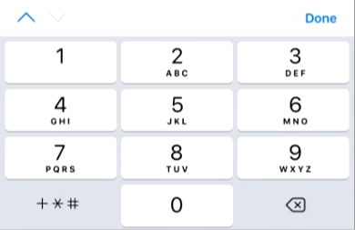

IOS 中 input 输入框的一些怪异行为
tanglijun 11月 23, 2018
最近有一些项目在 IOS 系统中出现了一些奇怪的问题，这些问题是关于 <input> 标签的一些怪异行为。
IOS 键盘左上角切换表单元素
IOS 会自动检测页面的表单元素自动并分配 tabindex 索引让用户可以快速切换表单元素，但这也会造成一些网页开发上的问题。
问题描述
页面中存在表单元素
页面浮层也是一个表单
这时候点击左上角的 上 下 按钮

产生光标定位到下层表单元素中
解决方案
经过搜索资料后，得出解决方案，在表单元素上面添加 tabindex="-1" 属性
<input type="text" tabindex="-1" />
这样 IOS 左上角的 上 下 箭头就被禁用了，也就修复了该问题

IOS 禁止输入中文
我们在做验证码的时候，希望用户只能输入英文和数字，但在 IOS 中并不能很好的实现这个功能。
问题描述
页面中 <input> 设置了 maxlength 限制 4 个字符，oninput 事件中用于移除中文字符，但是在 IOS 中没有效果
解决方案
利用 compositionstart，compositionend，input
inputElement.addEventListener('compositionstart', function () {
this.lock = true
this.regExpRule = /[^0-9a-zA-Z]/g
})
inputElement.addEventListener('compositionend', function () {
this.lock = false
this.value = this.value.replace(this.regExpRule, '')
})
inputElement.addEventListener('input', function () {
if (!this.lock) {
this.value = this.value.replace(this.regExpRule, '')
}
})
许可协议：署名-非商业性使用-相同方式共享 4.0 国际 (CC BY-NC-SA 4.0)
本文链接：https://tanglj.cn/2018/11/23/some-quirks-of-ios-input/